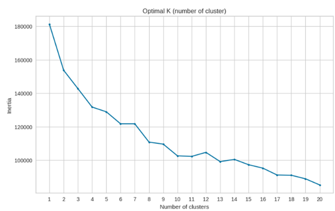
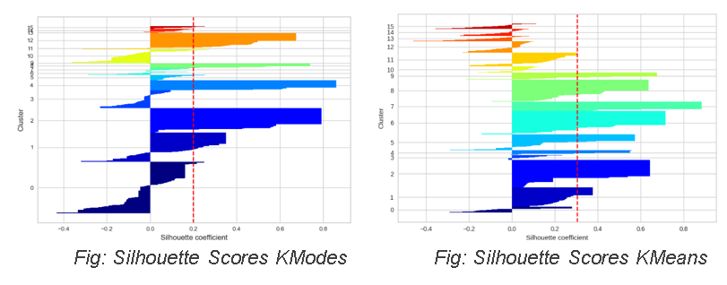
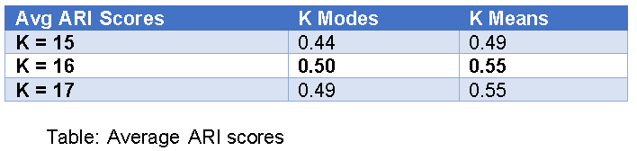
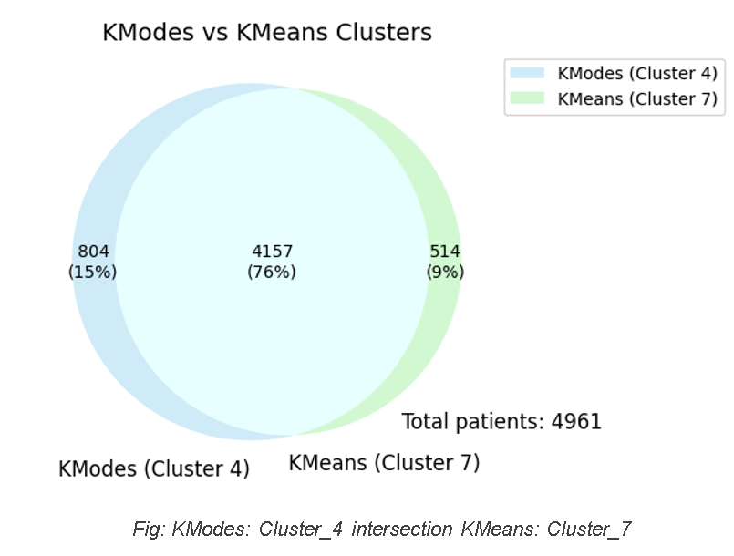
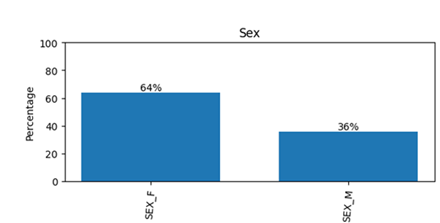
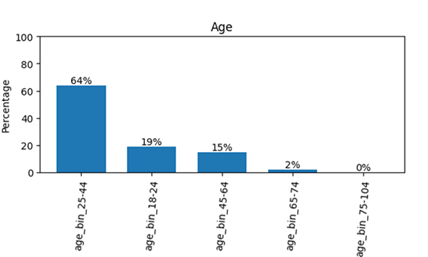
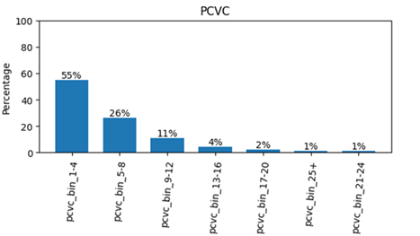
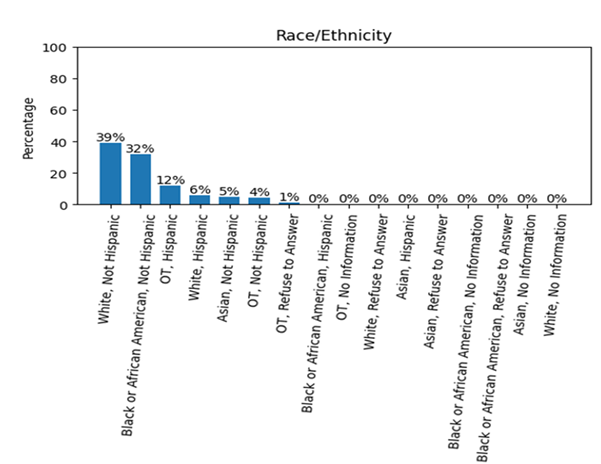

Leveraging the Syndemics Approach: ~ Unveiling Disease Interactions with Machine Learning ~
Key Findings: Disease Interactions and Syndemics
Cluster Analysis: K-Means and K-Modes
In our study, we clustered the data using 30 disease attributes, which allowed us to identify patterns and relationships among various health conditions. To achieve this, we implemented two clustering algorithms: K-Modes and K-Means.
To determine the optimal number of clusters, we utilized elbow plots, leading us to establish k=16 as the most suitable choice for our analysis. This method enabled us to visualize the point at which the addition of more clusters yields diminishing returns, confirming that 16 clusters provide a balanced representation of the data.
Fig: Elbow plot for KModes

Fig: Elbow plot for KMeans
To assess the quality of the clusters generated by both the K-Modes and K-Means algorithms, we employed two metrics: Silhouette Scores and the Adjusted Rand Index (ARI).Based on the clustering results obtained from the K-Modes and K-Means methods, we specifically focused our analysis on clusters that demonstrated Silhouette Scores greater than 0.8. This threshold indicates a high degree of separation and cohesion within the clusters, suggesting that they are well-defined and representative of distinct patterns in the data.
Silhouette Scores provide insight into the cohesiveness of clusters by measuring how similar an object is to its own cluster compared to other clusters. Higher silhouette values indicate better-defined clusters.

The Adjusted Rand Index (ARI) quantifies the agreement between the clustering results and a ground truth partitioning, taking into account the chance grouping of elements. A higher ARI value signifies a more accurate clustering relative to the true labels.

The clusters identified with Silhouette Scores exceeding this threshold are as follows:
K-Modes: Cluster_4
K-Means: Cluster_7

Results
Demographics Intersection
The analysis reveals a significant intersection between K-Modes Cluster 4 and K-Means Cluster 7, comprising a total of 4,157 patients.
This intersection indicates a notable overlap in the demographic characteristics captured by both clustering methodologies. Specifically,
K-Modes Cluster 4 contains a population of 4,961 patients, while K-Means Cluster 7 consists of 4,671 patients.
The demographic features of these intersecting patients warrant further examination, as they may provide valuable insights into shared
characteristics and health outcomes among these groups. Understanding the demographics of this intersection
can enhance the interpretation of clustering results and inform targeted interventions for the patient population.




Observed-Expected Ratio Results
The analysis of the Observed-Expected Ratio (OER) for the intersecting cluster highlights several potential syndemics, with OER values exceeding 1.0. The most pronounced associations include the following: